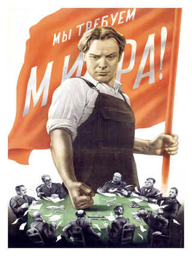
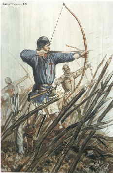
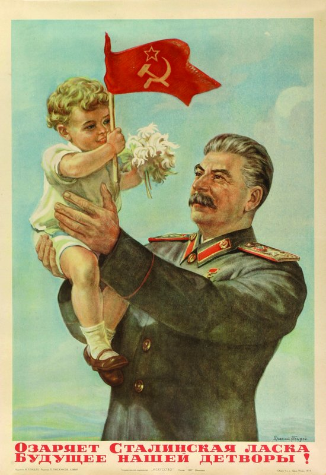
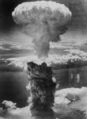

When
the Russian girl Valentina Tereshkova, quite without pilot training, went into orbit on
June 16, 1963, her action, as reacted to in the press and other media, was a kind of
defacing of the images of the male astronauts, especially the Americans. Shunning the
expertise of American astronauts, all of whom were qualified test pilots, the Russians
don't seem to feel that space travel is related enough to the airplane to require a
pilot's "wings." Since our culture forbids the sending of a woman into orbit,
our only repartee would have been to launch into orbit a group of space children, to
indicate that it is, after all, child's play.
The
first sputnik or "little fellow-traveler" was a witty taunting of the capitalist
world by means of a new kind of technological image or icon, for which a group of children
in orbit might yet be a telling retort. Plainly, the first lady astronaut is offered to
the West as a little Valentine—or heart throb—suited to our sentimentality. In
fact, the war of the icons, or the eroding of the collective countenance of one's rivals,
has long been under way. Ink and photo are supplanting soldiery and tanks. The pen daily
becomes mightier than the sword.

The flag says: "Proletariat smashes the banker gangs."
The corporate logo of the industrialized world is the noble heraldry of our
time.
The
French phrase "guerre des nerfs" of twenty-five years ago has since come
to be referred to as "the cold war." It is really an electric battle of
information and of images that goes far deeper and is more obsessional than the old hot
wars of industrial hardware.
The
"hot" wars of the past used weapons that knocked off the enemy, one by one. Even
ideological warfare in the eighteenth and nineteenth centuries proceeded by persuading
individuals to adopt new points of view, one at a time. Electric persuasion by photo and
movie and TV works, instead, by dunking entire populations in new imagery. Full awareness
of this technological change had dawned on Madison Avenue ten years ago when it shifted
its tactics from the promotion of the individual product to the collective involvement in
the "corporate image," now altered to "corporate posture."
Parallel
to the new cold war of information exchange is the situation commented on by James Reston
in a New York Times release from Washington:
Politics has gone international. The British
Labor Leader is here campaigning for Prime Minister of Britain, and fairly soon John F.
Kennedy will be over in Italy and Germany campaigning for reelection. Everybody's now
whistle-stopping through somebody else's country, usually ours.
Washington has still not adjusted to this
third-man role. It keeps forgetting that anything said here may be used by , one side or
another in some election campaign, and that it may, by accident, be the decisive element
in the final vote.
If
the cold war in 1964 is being fought by informational technology, that is because all wars
have been fought by the latest technology available in any culture. In one of his sermons
John Donne commented thankfully on the blessing of heavy firearms:
So by the benefit of this light of reason they
have found out Artillery, by which warres come to quicker ends than heretofore…
Whenever armor is introduced to the
battlefield, e.g. the adoption of the tank in WWI, there is a dramatic decline in
casualties.
The
scientific knowledge needed for the use of gunpowder and the boring of cannon appeared to
Donne as "the light of reason." He failed to notice another advance in the same
technology that hastened and extended the scope of human slaughter. It is referred to by
John U. Nef in War and Human Progress:
The abandonment of armor was due to
the introduction of the Welsh longbow.
The gradual abandonment of armor as a part of the
equipment of soldiers during the seventeenth century freed some metal supplies for the
manufacture of firearms and missiles.
It
is easy to discover in this a seamless web of interwoven events when we turn to look at
the psychic and social consequences of the technological extensions of man.
Back
in the 1920s King Amanullah seems to have put his finger on this web when he said, after
firing off a torpedo:
"I feel half an
Englishman already."
The same sense of the
relentlessly interwoven texture of human fate was touched by the schoolboy who said:
"Dad, I hate
war."
"Why, son?"
"Because war makes history, and I hate history."
One of the most important spinoffs
of the U.S. space program was the integrated circuit. It led to the revolution in personal
computers and information technology.
This early Integrated Circuit bears some resemblance to the vacuum tube it
replaced.
The
techniques developed over the centuries for drilling gun-barrels provided the means that
made possible the steam engine. The piston shaft and the gun presented the same problems
in boring hard steel. Earlier, it had been the lineal stress of perspective that had
channeled perception in paths that led to the creation of gunfire. Long before guns,
gunpowder had been used explosively, dynamite style. The use of gunpowder for the propelling of missiles
in trajectories waited for the coming of perspective in the arts. This liaison of
events between technology and the arts may explain a matter that has long puzzled
anthropologists. They have repeatedly tried to explain the fact that nonliterates are
generally poor shots with rifles, on the grounds that, with the bow and arrow, proximity
to game was more important than distant accuracy, which was almost impossible to
achieve—hence, say some anthropologists, their imitation of hunted beasts by dressing
in skins to get close to the herd. It is also pointed out that bows are silent, and when
an arrow missed, animals rarely fled.

The Welsh longbow, a lethal battlefield weapon
Uniform Euclidean space is, of course, a hallucination.
If the arrow is an extension of the hand and the
arm, the rifle is an extension of the eye and teeth. It may be to the point to
remark that it was the literate American colonists who were first to insist on a rifled
barrel and improved gunsights. They improved the old muskets, creating the Kentucky rifle.
It was the highly literate Bostonians who
outshot the British regulars. Marksmanship is not the gift of the native or the
woodsman, but of the literate colonist. So runs this argument that links gunfire itself
with the rise of perspective, and with the extension of the visual power in literacy. In
the Marine Corps it has been found that there is a definite correlation between education
and marksmanship. Not for the nonliterate is our easy selection of a separate, isolated
target in space, with the rifle as an extension of the eye.
If
gunpowder was known long before it was used for guns, the same is also true of the use of
the lodestone or magnet. Its use in the compass for lineal navigation had, also, to wait
for the discovery of lineal perspective in the arts. Navigators took a long time to accept
the possibility of space as uniform, connected, and continuous. Today in physics, as in painting and sculpture,
progress consists in giving up the idea of space as either uniform, continuous, or
connected. Visuality has lost its primacy.
Nine Most Valuable Tech Companies
In
the Second World War the marksman was replaced by automatic weapons fired blindly in what
were called "perimeters of fire" or "fire lanes." The old-timers
fought to retain the bolt-action Springfield which encouraged single-shot accuracy and
sighting. Spraying the air with lead in a kind of tactual embrace was found to be good by
night, as well as by day, and sighting was unnecessary. At this stage of technology, the
literate man is somewhat in the position of the old-timers who backed the Springfield
rifle against perimeter fire. It is this same visual habit that deters and obstructs
literate man in modern physics, as Milic Capek explains in The Philosophical Impact of
Modern Physics. Men in the older oral societies of middle Europe are better able to
conceive the nonvisual velocities and relations of the subatomic world.
Our
highly literate societies are at a loss as they encounter the new structures of opinion
and feeling that result from instant and global information. They are still in the grip of
"points of view" and of habits of dealing with things one at a time. Such habits
are quite crippling in any electric structure of information movement, yet they could be
controlled if we recognized whence they had been acquired. But literate society thinks of its artificial
visual bias as a thing natural and innate.
Literacy
remains even now the base and model of all programs of industrial mechanization; but, at
the same time, it locks the minds and senses of its users in the mechanical and
fragmentary matrix that is so necessary to the maintenance of mechanized society. That is
why the transition from mechanical to electric technology is so very traumatic and severe
for us all. The mechanical techniques, with their limited powers, we have long used as
weapons. The electric techniques cannot be used aggressively except to end all life at
once, like the turning off of a light. To live with both of these technologies at the same
time is the peculiar drama of the twentieth century.
Toynbee called this de-materialization process etherialization.
In
his Education Automation, R. Buckminster Fuller considers that weaponry has been a
source of technological advance for mankind because it requires continually improved performance with ever smaller means.
"As we went from the ships of the sea to the ships of the air, the performance per
pound of the equipment and fuel became of even higher importance than on the sea."
"Weapons proper are extensions of hands, nails, and teeth, and come
into existence as tools needed for accelerating the processing of matter."
It
is this trend toward more and more power with less and less hardware that is
characteristic of the electric age of information. Fuller has estimated that in the first
half century of the airplane the nations of the world have invested two and a half
trillion dollars by subsidy of the airplane as a weapon. He added that this amounts to
sixty-two times the value of all the gold in the world. His approach to these problems is
more technological than the approach of historians, who have often tended to find that war
produces nothing new in the way of invention.
Is
there any truth to the idea advanced by Christopher Hitchens that Stalin inherited the
divinity conferred on the Czar by the Russian Orthodox Church?
The Theotokos of Tikvin, a Russian icon, ca. 1300

Stalinist-era propaganda poster
"This
man will teach us how to beat him," Peter the Great is said to have remarked after
his army had been beaten by Charles XII of Sweden. Today, the backward countries can learn
from us how to beat us. In the new electric age of information, the backward countries
enjoy some specific advantages over the highly literate and industrialized cultures. For
backward countries have the habit and understanding of oral propaganda and persuasion that
was eroded in industrial societies long ago. The Russians had only to adapt their
traditions of Eastern icon and image-building to the new electric media in order to be
aggressively effective in the modern world of information. The idea of the Image, that
Madison Avenue has had to learn the hard way, was the only idea available to Russian
propaganda. The Russians have not shown imagination or resourcefulness in their
propaganda. They have merely done that which their religious and cultural traditions
taught them; namely, to build images.
The
city, itself, is traditionally a military weapon, and is a collective shield or plate
armor, an extension of the castle of our very skins. Before the huddle of the city, there
was the food-gathering phase of man the hunter, even as men have now in the electric age
returned psychically and socially to the nomad state. Now, however, it is called
information-gathering and data-processing. But it is global, and it ignores and replaces
the form of the city which has, therefore, tended to become obsolete. With instant
electric technology, the globe itself can never again be more than a village, and the very
nature of city as a form of major dimensions must inevitably dissolve like a fading shot
in a movie. The first circumnavigation of the globe in the Renaissance gave men a sense of
embracing and possessing the earth that was quite new, even as the recent astronauts have
again altered man's relation to the planet, reducing its scope to the extent of an
evening's stroll.
The military-industrial complex: to
kill the enemy is to process his matter, i.e. to dematerialize or etherialize him, so that
he no longer represents an impediment to our safety and progress.
Can
We Survive Our Own Technology? Scientists have succeeded in building the
first synthetic life form by sequencing a bacterium's four-letter-based genome on a
computer and duplicating it biochemically. A biological doomsday weapon?
Islamic theocracies regard the West's technolgical superiority a mortal threat. Thus
Islam's asymmetric warfare against the West.
The
city, like a ship, is a collective extension of the castle of our skins, even as clothing
is an extension of our individual skins. But weapons proper are extensions of hands, nails,
and teeth, and come into existence as tools needed for accelerating the processing of
matter. Today, when we live in a time of sudden transition from mechanical to
electric technology, it is easier to see the character of all previous technologies, we
being detached from all of them for the time being. Since our new electric technology is
not an extension of our bodies but of our central nervous systems, we now see all
technology, including language, as a means of processing experience, a means of storing
and speeding information. And in such a situation all technology can plausibly be regarded as weapons.
Previous wars can now be regarded as the processing of difficult and resistant materials
by the latest technology, the speedy dumping of industrial products on an enemy
market to the point of social saturation. War, in fact, can be seen as a process of
achieving equilibrium among unequal technologies, a fact that explains Toynbee's puzzled
observation that each invention of a new weapon is a disaster for society, and that
militarism itself is the most common cause of the breaking of civilizations.

By
militarism, Rome extended civilization or individualism, literacy, and lineality to many
oral and backward tribes. Even today the mere
existence of a literate and industrial West appears quite naturally as dire aggression to
nonliterate societies; just as the mere existence of the atom bomb appears as a state of
universal aggression to industrial and mechanized societies.
On
the one hand, a new weapon or technology looms as a threat to all who lack it. On the
other hand, when everybody has the same technological aids, there begins the competitive
fury of the homogenized and the egalitarian pattern against which the strategy of social
class and caste has often been used in the past. For caste and class are techniques of social slow-down
that tend to create the stasis of tribal societies. Today we appear to be poised
between two ages—one of detribalization and one of retribalization.
Between the acting of a dreadful thing,
And the first motion, all the interim is
Like a Phantasma, or a hideous Dream:
The genius and the mortal instruments
Are then in council; and the state of man,
Like to a little Kingdom, suffers then
The nature of an insurrection. (Julius Caesar, Brutus II, i)
"There is a sense in which at
least literary and artistic discussion may benefit from the advent of the atom bomb. A
great many trivial issues can now, with a blush, retire from guerrilla duty and literary
partisans can well afford to cultivate an urbane candor where previously none had been
considered possible."
If
mechanical technology as extension of parts of the human body had exerted a fragmenting
force, psychically and socially, this fact appears nowhere more vividly than in mechanical
weaponry. With the extension of the central nervous system by electric technology, even
weaponry makes more vivid the fact of the
unity of the human family. The very
inclusiveness of information as a weapon becomes a daily reminder that politics and
history must be recast in the form of "the concretization of human fraternity."
This dilemma of weaponry appears very clearly to Leslie Dewart in his Christianity and
Revolution, when he points to the obsolescence of the fragmented balance-of-power
techniques. As an instrument of policy, modern war has come to mean "the existence
and end of one society to the exclusion of another." At this point, weaponry is a
self-liquidating fact.